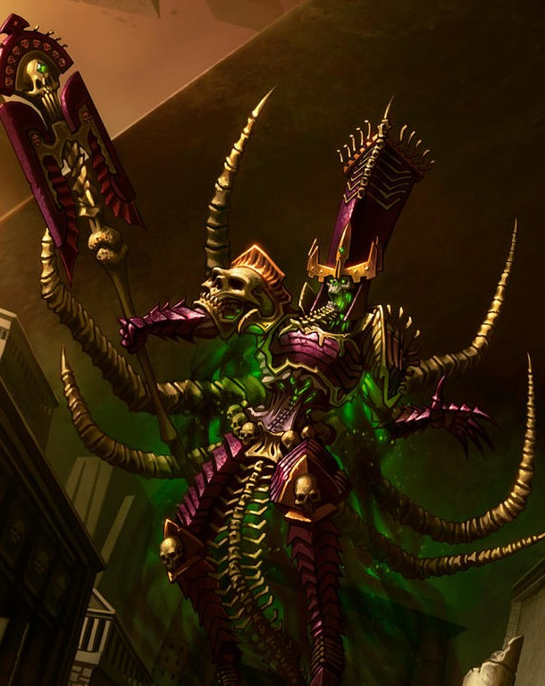
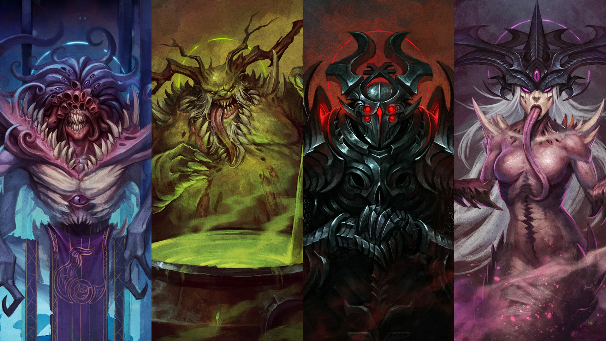

This goes over my two favorite factions in Warhammer Age of Sigmar I'll be going over there roles in the other warhammers and what the abilites and units they use.
Grand Alliance of Death
My frist and favorite faction is Grand Alliance of Death, also called the forces of Death or simply Death, is comprised of the armies of undead and mortals that follow the dark commands of the Great Necromancer Nagash, the god of death and the Supreme Lord of the Undead who rules all the underwords
Choas
My second favorite faction is The Grand Alliance of Chaos, also called the "forces of Chaos" or simply Chaos, is comprised of all the mortal worshippers and daemons of the metaphysical force of Chaos and the five major Chaos Gods who are its embodiments
who are (names are in order of the picture) Tzeentch god of magic, Nurgle god of disease, Khorne the god of war, And Slannesh god of excess